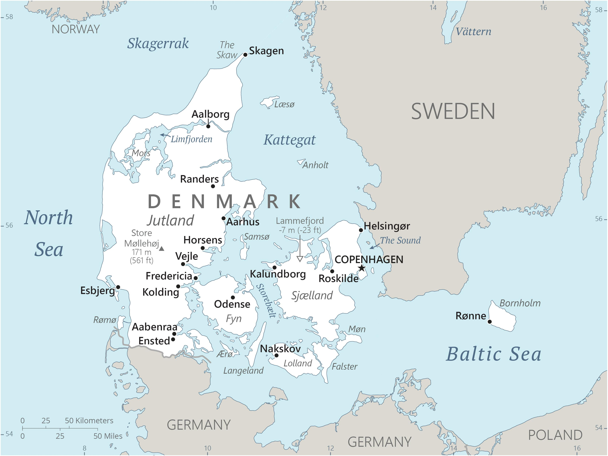

Genel Bilgiler
Danimarka, Kuzey Avrupa’da yer alan anayasal bir monarşi ile yönetilen ülkedir. Başkenti Kopenhag’dır. Yaklaşık 5,9 milyon nüfusa sahiptir. Resmî dili Danca’dır ve para birimi Danimarka Kronu (DKK)’dır. Danimarka Avrupa Birliği üyesidir, ancak Euro kullanmamaktadır. Yüksek yaşam standartları ve güçlü sosyal refah sistemi ile tanınır.
Danimarka, kuzeyde Norveç Denizi ve Kuzey Denizi, doğuda Baltık Denizi ile çevrilidir. Güneyde Almanya ile kara sınırı vardır. Yüzölçümü yaklaşık 42.933 km²’dir. Ülke, birçok küçük ada ve Jutland Yarımadası’ndan oluşur. Toprakları çoğunlukla düz ve alçaktır, kıyı şeridi oldukça uzundur.
Başkent: Kopenhag
Kıta: Avrupa
Yüzölçümü: 42.933 km²
Nüfus (2025): 5.900.000

Bayrak Anlamı: Danimarka bayrağı kırmızı zemin üzerinde beyaz bir İskandinav haçından oluşur. Haç Hristiyanlığı temsil eder. Kırmızı zemin cesareti ve bağımsızlığı, beyaz haç ise barışı ve saflığı simgeler. Bayrak, Danimarka’nın ulusal sembolü olarak uzun bir tarihe sahiptir ve dünyanın en eski bayraklarından biridir.
Danimarka Haritası
Ekonomi
Danimarka ekonomisi gelişmiş ve yüksek gelirli bir yapıya sahiptir. Tarım, sanayi ve hizmet sektörleri ekonominin temelini oluşturur. Tarımda süt, et ve tahıl üretimi öne çıkar. Sanayi alanında gemi inşası, makine ve kimya ürünleri önemlidir. Hizmet sektörü özellikle finans, lojistik ve turizm alanlarında güçlüdür. Danimarka, yenilenebilir enerji ve sürdürülebilir teknoloji alanlarında öncü ülkelerden biridir.
| Yıl | İhracat (Milyar $) | İthalat (Milyar $) |
|---|---|---|
| 2019 | 81 | 76 |
| 2020 | 75 | 70 |
| 2021 | 85 | 80 |
| 2022 | 87 | 82 |
| 2023 | 88 | 83 |